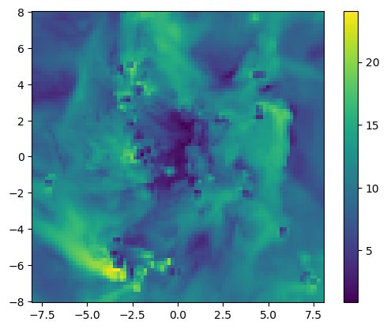

Data Masking, Filtering, and Metaprogramming
Advanced Data Manipulation and Selection Techniques
Tutorial Overview
This comprehensive tutorial explores the sophisticated data manipulation capabilities within MERA.jl, focusing on:
- Data Selection & Extraction: Advanced techniques for extracting specific variables and columns from complex astrophysical datasets
- Conditional Filtering: Multi-criteria filtering operations using both IndexedTables.jl and MERA's custom macros
- Masking Operations: Boolean array operations for selective data analysis without modifying source tables
- Data Table Extension: Adding computed variables and derived quantities to existing datasets
- Metaprogramming: Using MERA's pipeline macros (@filter, @apply, @where) for elegant data processing workflows
Learning Objectives
By completing this tutorial, you will master:
Data Selection Techniques:
- Extract single and multiple columns using IndexedTables and MERA functions
- Understanding the difference between
select(),columns(), andgetvar()approaches - Working with named tuples and dictionaries for multi-variable extraction
Advanced Filtering Operations:
- Single and multi-condition filtering using IndexedTables syntax
- MERA's pipeline macros for streamlined data processing
- Creating custom filtering functions for complex geometric conditions
- Comparing performance between different filtering approaches
Masking and Boolean Operations:
- Creating boolean masks for selective analysis
- Combining multiple masks using logical operations
- Applying masks to statistical functions without data modification
- Understanding mask types: Array{Bool,1} vs BitArray{1}
Data Table Extension:
- Adding computed columns using
transform()andinsertcolsafter() - Managing derived quantities with proper unit handling
- Removing and modifying existing columns
- Adding computed columns using
Metaprogramming Workflows:
- Using @filter macro for elegant condition-based filtering
- Building complex filtering pipelines with @apply and @where
- Creating reusable filtering expressions
Technical Foundation
IndexedTables.jl Integration
MERA leverages IndexedTables.jl for high-performance data manipulation:
- Memory Efficiency: Column-oriented storage optimized for large datasets
- Type Safety: Strongly typed columns ensuring computational correctness
- Performance: Optimized operations for filtering and selection
- Composability: Chainable operations for complex data processing workflows
MERA's Custom Macros
The tutorial demonstrates MERA's specialized macros:
- @filter: Streamlined conditional filtering with automatic type handling
- @apply: Pipeline operator for chaining multiple filtering operations
- @where: Condition-based row selection with field reference transformation
Data Types and Structures
Key concepts covered:
- DataSetType objects: HydroDataType, PartDataType, ClumpDataType, GravDataType
- Unit Management: Automatic conversion between code units and physical units
- Mask Types: Boolean arrays for selective operations
- Filtered Tables: Creating new DataSetType objects from filtered data
Data Loading and Environment Setup
Overview
This section establishes our computational environment by loading simulation data from multiple physics modules. We'll work with:
- Hydro data: Gas properties (density, velocity, pressure)
- Particle data: Stellar and dark matter particles
- Clump data: Identified density structures
- Simulation metadata: Physical scales and units
Data Loading Strategy
For this tutorial, we load data with specific constraints to optimize memory usage while maintaining sufficient complexity for filtering demonstrations:
- Resolution limit:
lmax=8provides good spatial resolution without excessive memory usage - Small value handling:
smallr=1e-5prevents numerical issues with very low density regions - Multi-physics approach: Loading all data types demonstrates cross-component filtering
using Mera
info = getinfo(400, "/Volumes/FASTStorage/Simulations/Mera-Tests/manu_sim_sf_L14");
gas = gethydro(info, lmax=8, smallr=1e-5);
particles = getparticles(info)
clumps = getclumps(info);[Mera]: 2025-08-14T14:49:55.275
Code: RAMSES
output [400] summary:
mtime: 2018-09-05T09:51:55
ctime: 2025-06-29T20:06:45.267
=======================================================
simulation time: 594.98 [Myr]
boxlen: 48.0 [kpc]
ncpu: 2048
ndim: 3
-------------------------------------------------------
amr: true
level(s): 6 - 14 --> cellsize(s): 750.0 [pc] - 2.93 [pc]
-------------------------------------------------------
hydro: true
hydro-variables: 7 --> (:rho, :vx, :vy, :vz, :p, :var6, :var7)
hydro-descriptor: (:density, :velocity_x, :velocity_y, :velocity_z, :thermal_pressure, :passive_scalar_1, :passive_scalar_2)
γ: 1.6667
-------------------------------------------------------
gravity: true
gravity-variables: (:epot, :ax, :ay, :az)
-------------------------------------------------------
particles: true
- Npart: 5.091500e+05
- Nstars: 5.066030e+05
- Ndm: 2.547000e+03
particle-variables: 5 --> (:vx, :vy, :vz, :mass, :birth)
-------------------------------------------------------
rt: false
-------------------------------------------------------
clumps: true
clump-variables: (:index, :lev, :parent, :ncell, :peak_x, :peak_y, :peak_z, Symbol("rho-"), Symbol("rho+"), :rho_av, :mass_cl, :relevance)
-------------------------------------------------------
namelist-file: false
timer-file: false
compilation-file: true
makefile: true
patchfile: true
=======================================================
[Mera]: Get hydro data: 2025-08-14T14:49:57.658
Key vars=(:level, :cx, :cy, :cz)
Using var(s)=(1, 2, 3, 4, 5, 6, 7) = (:rho, :vx, :vy, :vz, :p, :var6, :var7)
domain:
xmin::xmax: 0.0 :: 1.0 ==> 0.0 [kpc] :: 48.0 [kpc]
ymin::ymax: 0.0 :: 1.0 ==> 0.0 [kpc] :: 48.0 [kpc]
zmin::zmax: 0.0 :: 1.0 ==> 0.0 [kpc] :: 48.0 [kpc]
📊 Processing Configuration:
Total CPU files available: 2048
Files to be processed: 2048
Compute threads: 1
GC threads: 1
Processing files: 100%|██████████████████████████████████████████████████| Time: 0:02:47 (81.74 ms/it)
✓ File processing complete! Combining results...
✓ Data combination complete!
Final data size: 849332 cells, 7 variables
Creating Table from 849332 cells with max 1 threads...
Threading: 1 threads for 11 columns
Max threads requested: 1
Available threads: 1
Using sequential processing (optimal for small datasets)
Creating IndexedTable with 11 columns...
0.741037 seconds (4.93 M allocations: 465.695 MiB, 4.69% gc time, 89.64% compilation time)
✓ Table created in 1.086 seconds
Memory used for data table :71.27991771697998 MB
-------------------------------------------------------
[Mera]: Get particle data: 2025-08-14T14:52:49.720
Key vars=(:level, :x, :y, :z, :id)
Using var(s)=(1, 2, 3, 4, 5) = (:vx, :vy, :vz, :mass, :birth)
domain:
xmin::xmax: 0.0 :: 1.0 ==> 0.0 [kpc] :: 48.0 [kpc]
ymin::ymax: 0.0 :: 1.0 ==> 0.0 [kpc] :: 48.0 [kpc]
zmin::zmax: 0.0 :: 1.0 ==> 0.0 [kpc] :: 48.0 [kpc]
Progress: 100%|█████████████████████████████████████████| Time: 0:00:12
Found 5.089390e+05 particles
Memory used for data table :34.94713020324707 MB
-------------------------------------------------------
[Mera]: Get clump data: 2025-08-14T14:53:03.207
domain:
xmin::xmax: 0.0 :: 1.0 ==> 0.0 [kpc] :: 48.0 [kpc]
ymin::ymax: 0.0 :: 1.0 ==> 0.0 [kpc] :: 48.0 [kpc]
zmin::zmax: 0.0 :: 1.0 ==> 0.0 [kpc] :: 48.0 [kpc]
Read 12 colums:
[:index, :lev, :parent, :ncell, :peak_x, :peak_y, :peak_z, Symbol("rho-"), Symbol("rho+"), :rho_av, :mass_cl, :relevance]
Memory used for data table :61.58203125 KB
-------------------------------------------------------
Data Selection from Tables
Overview
Data selection is the foundation of all filtering and analysis operations in MERA. This section demonstrates multiple approaches to extract variables and columns from simulation datasets, each optimized for different use cases.
Selection Methodologies
We'll explore three complementary approaches:
IndexedTables.jl Functions (
select,columns):- Direct table operations with maximum performance
- Returns raw arrays or new table structures
- Ideal for bulk data extraction and preprocessing
MERA Functions (
getvar):- Integrated unit conversion and derived quantity calculation
- Handles physical units automatically
- Supports filtered datasets and custom data types
Hybrid Approaches:
- Combining both methods for optimal workflow
- Performance comparison and selection criteria
- Best practices for large dataset handling
Key Concepts
- Column-oriented access: IndexedTables stores data by column for efficient selection
- Type preservation: All operations maintain proper data types
- Memory efficiency: Selection creates views when possible, not copies
- Unit handling: MERA functions automatically manage unit conversions
Single Column/Variable Selection
Method Comparison: IndexedTables vs MERA
IndexedTables Approach (select):
- Performance: Maximum speed for raw data extraction
- Output: Vector{Float64} with data in code units
- Use case: When you need raw numerical data for custom calculations
- Memory: Most efficient, creates minimal overhead
MERA Approach (getvar):
- Functionality: Supports derived quantities and unit conversions
- Output: Vector with automatic unit conversion available
- Use case: When you need physical quantities or derived variables
- Integration: Seamlessly works with other MERA functions
By using IndexedTables or Mera functions
using Mera.IndexedTablesThe data table is stored in the data-field of any DataSetType. Extract an existing column (variable):
select(gas.data, :rho) # IndexedTables849332-element Vector{Float64}:
1.0e-5
1.0e-5
1.0e-5
1.0e-5
1.0e-5
1.0e-5
1.0e-5
1.0e-5
1.0e-5
1.0e-5
1.0e-5
1.0e-5
1.0e-5
⋮
0.00010967104288285959
0.0001088040126114162
0.00010915603617815434
0.00010917096551347797
0.00012465438542871006
0.00011934527871880502
0.00011294656300014925
0.00011110068692986109
0.00010901341218606515
0.00010849404903183988
0.00010900588395976569
0.00010910219163333514Pass the entire DataSetType (here gas) to the Mera function getvar to extract the selected variable or derived quantity from the data table. Call getvar() to get a list of the predefined quantities.
getvar(gas, :rho) # MERA849332-element Vector{Float64}:
1.0e-5
1.0e-5
1.0e-5
1.0e-5
1.0e-5
1.0e-5
1.0e-5
1.0e-5
1.0e-5
1.0e-5
1.0e-5
1.0e-5
1.0e-5
⋮
0.00010967104288285959
0.0001088040126114162
0.00010915603617815434
0.00010917096551347797
0.00012465438542871006
0.00011934527871880502
0.00011294656300014925
0.00011110068692986109
0.00010901341218606515
0.00010849404903183988
0.00010900588395976569
0.00010910219163333514Select several columns
By selecting several columns a new data table is returned:
select(gas.data, (:rho, :level)) # IndexedTablesTable with 849332 rows, 2 columns:
rho level
──────────────────
1.0e-5 6
1.0e-5 6
1.0e-5 6
1.0e-5 6
1.0e-5 6
1.0e-5 6
1.0e-5 6
1.0e-5 6
1.0e-5 6
1.0e-5 6
1.0e-5 6
1.0e-5 6
⋮
0.000108804 8
0.000109156 8
0.000109171 8
0.000124654 8
0.000119345 8
0.000112947 8
0.000111101 8
0.000109013 8
0.000108494 8
0.000109006 8
0.000109102 8The getvar function returns a dictionary containing the extracted arrays:
getvar(gas, [:rho, :level]) # MERADict{Any, Any} with 2 entries:
:level => [6.0, 6.0, 6.0, 6.0, 6.0, 6.0, 6.0, 6.0, 6.0, 6.0 … 8.0, 8.0, 8.0…
:rho => [1.0e-5, 1.0e-5, 1.0e-5, 1.0e-5, 1.0e-5, 1.0e-5, 1.0e-5, 1.0e-5, 1.…Select one or more columns and get a tuple of vectors:
vtuple = columns(gas.data, (:rho, :level)) # IndexedTables(rho = [1.0e-5, 1.0e-5, 1.0e-5, 1.0e-5, 1.0e-5, 1.0e-5, 1.0e-5, 1.0e-5, 1.0e-5, 1.0e-5 … 0.00010915603617815434, 0.00010917096551347797, 0.00012465438542871006, 0.00011934527871880502, 0.00011294656300014925, 0.00011110068692986109, 0.00010901341218606515, 0.00010849404903183988, 0.00010900588395976569, 0.00010910219163333514], level = [6, 6, 6, 6, 6, 6, 6, 6, 6, 6 … 8, 8, 8, 8, 8, 8, 8, 8, 8, 8])propertynames(vtuple)(:rho, :level)vtuple.rho849332-element Vector{Float64}:
1.0e-5
1.0e-5
1.0e-5
1.0e-5
1.0e-5
1.0e-5
1.0e-5
1.0e-5
1.0e-5
1.0e-5
1.0e-5
1.0e-5
1.0e-5
⋮
0.00010967104288285959
0.0001088040126114162
0.00010915603617815434
0.00010917096551347797
0.00012465438542871006
0.00011934527871880502
0.00011294656300014925
0.00011110068692986109
0.00010901341218606515
0.00010849404903183988
0.00010900588395976569
0.00010910219163333514Multiple Column Selection
Data Structure Comparison
IndexedTables select Output:
- Returns a new
Tableobject with selected columns - Maintains column relationships and indexing
- Efficient for subsequent filtering operations
- Memory overhead: Only stores references to selected columns
IndexedTables columns Output:
- Returns
NamedTupleof vectors - Direct access to individual arrays via dot notation
- Best for mathematical operations on multiple variables
- Memory: Slightly higher due to tuple structure
MERA getvar Output:
- Returns
Dictionarywith flexible key-value access - Supports mixed units and derived quantities
- Ideal for complex analysis workflows
- Memory: Additional overhead for unit management
Use Case Guidelines
- Table selection: When maintaining relational structure for filtering
- Column tuples: For mathematical operations requiring multiple variables
- Dictionary extraction: When working with different units or derived quantities
Filter by Condition
With IndexedTables (example A)
Get all the data corresponding to cells/rows with level=6. Here, the variable p is used as placeholder for rows. A new IndexedTables data table is returend:
filtered_db = filter(p->p.level==6, gas.data ) # IndexedTables
# see the reduced row numberTable with 240956 rows, 11 columns:
Columns:
# colname type
────────────────────
1 level Int64
2 cx Int64
3 cy Int64
4 cz Int64
5 rho Float64
6 vx Float64
7 vy Float64
8 vz Float64
9 p Float64
10 var6 Float64
11 var7 Float64With IndexedTables (example B)
Get all cells/rows with densities >= 3 Msol/pc^3. Since the data is given in code units, we need to convert from the given physical units:
density = 3. / gas.scale.Msol_pc3
filtered_db = filter(p->p.rho>= density, gas.data ) # IndexedTablesTable with 210 rows, 11 columns:
Columns:
# colname type
────────────────────
1 level Int64
2 cx Int64
3 cy Int64
4 cz Int64
5 rho Float64
6 vx Float64
7 vy Float64
8 vz Float64
9 p Float64
10 var6 Float64
11 var7 Float64Unit Conversion in Filtering
Critical Concept: All data in MERA tables is stored in code units, not physical units.
Before filtering, always convert your physical threshold to code units:
# Convert physical density (3 Msol/pc³) to code units
density_physical = 3.0 # Msol/pc³
density_code = density_physical / gas.scale.Msol_pc3Why this matters:
- Direct comparison with physical values will fail:
row.rho >= 3.0(incorrect) - Correct comparison uses code units:
row.rho >= density_code(correct) - MERA's
.scaleproperties provide all necessary conversion factors
Performance tip: Pre-calculate conversion factors once, reuse in filter conditions.
Get a Quantity/Variable from The Filtered Data Table
Calculate the mass for each cell and the sum:
mass_tot = getvar(gas, :mass, :Msol) # the full data table
sum(mass_tot)3.0968754148332745e10The same calculation is possible for the filtered data base which has to be passed together with the original object, here: gas
mass_filtered_tot = getvar(gas, :mass, :Msol, filtered_db=filtered_db) # the filtered data table
sum(mass_filtered_tot)1.4862767967535206e10Conditional Data Filtering
Overview
Filtering enables selective data analysis by creating subsets based on specific conditions. MERA supports multiple filtering approaches, each optimized for different complexity levels and performance requirements.
Filtering Methodologies
IndexedTables Native Filtering:
- Uses
filter(condition_function, table)syntax - Highest performance for simple conditions
- Returns new table structure with filtered rows
- Memory efficient through lazy evaluation
- Uses
MERA Macro Filtering:
- Custom
@filtermacro for streamlined syntax - Automatic type handling and unit conversion
- Supports complex expressions with field references
- Optimized for astrophysical data patterns
- Custom
Chained Filtering:
- Sequential application of multiple conditions
- Pipeline-style operations for complex criteria
- Progressive refinement of datasets
Performance Considerations
- Simple conditions: IndexedTables native filtering is fastest
- Complex expressions: MERA macros provide better readability
- Multiple conditions: Chain operations for optimal memory usage
- Large datasets: Consider filtering before expensive calculations
Create a New DataSetType from a Filtered Data Table
The macros @filter is created by Mera and are not included in IndexedTables.jl.
A new DataSetType can be constructed for the filtered data table that can be passed to the functions.
density = 3. /gas.scale.Msol_pc3
filtered_db = @filter gas.data :rho >= density
gas_new = construct_datatype(filtered_db, gas);# Both are now of HydroDataType and include the same information about the simulation properties (besides the canged data table)
println( typeof(gas) )
println( typeof(gas_new) )HydroDataType
HydroDataType
mass_filtered_tot = getvar(gas_new, :mass, :Msol)
sum(mass_filtered_tot)1.4862767967535206e10Multi-Criteria Filtering
Advanced Filtering Strategies
Multi-condition filtering enables sophisticated data selection by combining multiple criteria. This section demonstrates various approaches for handling complex geometric and physical constraints.
Filtering Approaches Comparison
1. Sequential IndexedTables Filtering
# Step-by-step refinement
filtered_db = filter(p->p.rho >= density, gas.data)
filtered_db = filter(row->geometric_condition(row), filtered_db)Advantages: Clear logical flow, easy debugging, memory efficient Use case: When conditions have different computational costs
2. Combined Condition Filtering
# Single filter with compound condition
filtered_db = filter(row-> condition1 && condition2 && condition3, gas.data)Advantages: Single pass through data, optimal performance Use case: When all conditions have similar computational requirements
3. MERA Pipeline Macros
# Elegant pipeline syntax
filtered_db = @apply gas.data begin
@where :rho >= density
@where geometric_condition
endAdvantages: Readable syntax, automatic optimization, extensible Use case: Complex analysis workflows with many conditions
Geometric Filtering Techniques
This section demonstrates cylindrical selection - a common astrophysical analysis pattern for studying disk galaxies, outflows, and rotating structures.
With IndexedTables
Get the mass of all cells/rows with densities >= 3 Msol/pc^3 that is within the disk radius of 3 kpc and 2 kpc from the plane:
boxlen = info.boxlen
cv = boxlen/2. # box-center
density = 3. /gas.scale.Msol_pc3
radius = 3. /gas.scale.kpc
height = 2. /gas.scale.kpc
# filter cells/rows that contain rho greater equal density
filtered_db = filter(p->p.rho >= density, gas.data )
# filter cells/rows lower equal the defined radius and height
# (convert the cell number to a position according to its cellsize and relative to the box center)
filtered_db = filter(row-> sqrt( (row.cx * boxlen /2^row.level - cv)^2 + (row.cy * boxlen /2^row.level - cv)^2) <= radius &&
abs(row.cz * boxlen /2^row.level - cv) <= height, filtered_db)
var_filtered = getvar(gas, :mass, filtered_db=filtered_db, unit=:Msol)
sum(var_filtered) # [Msol]2.7506324500621886e9Use Pipeline Macros
The macros @apply and @where are created by Mera and are not included in IndexedTables.jl.
boxlen = info.boxlen
cv = boxlen/2.
density = 3. /gas.scale.Msol_pc3
radius = 3. /gas.scale.kpc
height = 2. /gas.scale.kpc
filtered_db = @apply gas.data begin
@where :rho >= density
@where sqrt( (:cx * boxlen/2^:level - cv)^2 + (:cy * boxlen/2^:level - cv)^2 ) <= radius
@where abs(:cz * boxlen/2^:level -cv) <= height
end
var_filtered = getvar(gas, :mass, filtered_db=filtered_db, unit=:Msol)
sum(var_filtered) # [Msol]2.7506324500621886e9External Functions With IndexedTables
boxlen = info.boxlen
function r(x,y,level,boxlen)
return sqrt((x * boxlen /2^level - boxlen/2.)^2 + (y * boxlen /2^level - boxlen/2.)^2)
end
function h(z,level,boxlen)
return abs(z * boxlen /2^level - boxlen/2.)
end
density = 3. /gas.scale.Msol_pc3
radius = 3. /gas.scale.kpc
height = 2. /gas.scale.kpc
filtered_db = filter(row-> row.rho >= density &&
r(row.cx,row.cy, row.level, boxlen) <= radius &&
h(row.cz,row.level, boxlen) <= height, gas.data)
var_filtered = getvar(gas, :mass, filtered_db=filtered_db, unit=:Msol)
sum(var_filtered) # [Msol]2.7506324500621886e9Result Verification: All methods produce identical filtered datasets (~2.75e9 Msol total mass), confirming implementation consistency.
Compare With Predefined Functions
Compare the previous calculations with the predefined subregion function: The subregion function takes the intersected cells of the range borders into account (default):
density = 3. /gas.scale.Msol_pc3 # in code units
sub_region = subregion(gas, :cylinder, radius=3., height=2., center=[:boxcenter], range_unit=:kpc, verbose=false ) # default: cell=true
filtered_db = @filter sub_region.data :rho >= density
var_filtered = getvar(gas, :mass, :Msol, filtered_db=filtered_db)
sum(var_filtered) # [Msol]2.9388306102361355e9By setting the keyword cell=false, only the cell-centres within the defined region are taken into account (as in the calculations in the previous section).
density = 3. /gas.scale.Msol_pc3 # in code units
sub_region = subregion(gas, :cylinder, radius=3., height=2., center=[:boxcenter], range_unit=:kpc, cell=false, verbose=false )
filtered_db = @filter sub_region.data :rho >= density
var_filtered = getvar(gas, :mass, :Msol, filtered_db=filtered_db)
sum(var_filtered)2.7506324500621886e9Extend the Data Table
Add costum columns/variables to the data that can be automatically processed in some functions: (note: to take advantage of the Mera unit management, store new data in code-units)
# calculate the Mach number in each cell
mach = getvar(gas, :mach);Mach Number Calculation Example
Physical Significance: The Mach number (M = v/c_s) is crucial for understanding:
- Turbulence characterization: Subsonic (M < 1) vs supersonic (M > 1) flows
- Shock wave identification: High Mach regions indicate strong shocks
- Star formation: Turbulent support against gravitational collapse
MERA Implementation:
getvar(gas, :mach)automatically calculates: M = |v| / c_s- Handles pressure, density, and velocity conversion to sound speed
- Returns dimensionless quantity (no unit conversion needed)
Integration Workflow:
- Calculate derived quantity using MERA functions
- Add to table structure with meaningful name
- Use in subsequent analysis (projections, filtering, statistics)
This example demonstrates how easily MERA integrates custom calculations into the standard analysis pipeline.
# add the extracted Mach number (1dim-array) to the data in the object "gas"
# the array has the same length and order (rows/cells) as in the data table
# push a column at the end of the table:
# transform(data-table, key => new-data)
gas.data = transform(gas.data, :mach => mach) # IndexedTablesTable with 849332 rows, 12 columns:
Columns:
# colname type
────────────────────
1 level Int64
2 cx Int64
3 cy Int64
4 cz Int64
5 rho Float64
6 vx Float64
7 vy Float64
8 vz Float64
9 p Float64
10 var6 Float64
11 var7 Float64
12 mach Float64proj_z = projection(gas, :mach, xrange=[-8.,8.], yrange=[-8.,8.], zrange=[-2.,2.], center=[:boxcenter], range_unit=:kpc);[Mera]: 2025-08-14T14:53:11.798
center: [0.5, 0.5, 0.5] ==> [24.0 [kpc] :: 24.0 [kpc] :: 24.0 [kpc]]
domain:
xmin::xmax: 0.3333333 :: 0.6666667 ==> 16.0 [kpc] :: 32.0 [kpc]
ymin::ymax: 0.3333333 :: 0.6666667 ==> 16.0 [kpc] :: 32.0 [kpc]
zmin::zmax: 0.4583333 :: 0.5416667 ==> 22.0 [kpc] :: 26.0 [kpc]
Selected var(s)=(:mach, :sd)
Weighting = :mass
Effective resolution: 256^2
Map size: 86 x 86
Pixel size: 187.5 [pc]
Simulation min.: 187.5 [pc]
Available threads: 1
Requested max_threads: 1
Variables: 2 (mach, sd)
Processing mode: Sequential (single thread)
using PyPlot
imshow( ( permutedims(proj_z.maps[:mach]) ), origin="lower", extent=proj_z.cextent)
colorbar();
Figure(PyObject <Figure size 640x480 with 2 Axes>)Remove the column :mach from the table:
gas.data = select(gas.data, Not(:mach)) # select all columns, not :machTable with 849332 rows, 11 columns:
Columns:
# colname type
────────────────────
1 level Int64
2 cx Int64
3 cy Int64
4 cz Int64
5 rho Float64
6 vx Float64
7 vy Float64
8 vz Float64
9 p Float64
10 var6 Float64
11 var7 Float64Data Table Extension and Modification
Overview
Table extension allows you to add computed variables and derived quantities directly to your simulation datasets. This enables seamless integration of custom calculations with MERA's analysis functions.
Extension Methodologies
1. Transform Method (transform)
data_table = transform(data_table, :new_column => calculated_values)- Purpose: Add columns to existing tables
- Performance: Optimized for large datasets
- Memory: Creates new table structure efficiently
2. Insert Method (insertcolsafter)
data_table = insertcolsafter(data_table, position, :new_column => values)- Purpose: Insert columns at specific positions
- Control: Precise column ordering
- Use case: When column order matters for downstream processing
Best Practices for Table Extension
Unit Management
- Store in code units: Maintains consistency with existing data
- Document physical meaning: Use meaningful column names
- Conversion factors: Keep physical unit equivalents accessible
Data Validation
- Array length: New columns must match table row count
- Data types: Use appropriate numerical types (Float64, Int64)
- Missing values: Handle edge cases and undefined calculations
Memory Considerations
- In-place operations: When possible, use
transformfor efficiency - Temporary calculations: Clean up intermediate arrays
- Large datasets: Consider computing on-demand vs storing all derived quantities
Data Masking Operations
Overview
Masking provides a powerful alternative to filtering that enables selective analysis without modifying the original dataset. Unlike filtering (which creates new tables), masking uses boolean arrays to mark which data points to include in calculations.
Masking vs Filtering: Key Differences
| Aspect | Masking | Filtering |
|---|---|---|
| Data modification | Original table unchanged | Creates new table |
| Memory usage | Minimal (boolean array only) | Higher (duplicate data) |
| Reversibility | Easily reversible | Requires re-filtering |
| Function support | MERA functions with mask= parameter | Standard table operations |
| Use case | Statistical analysis, comparisons | Data preprocessing, subset analysis |
Masking Methodology Overview
MERA supports three approaches for creating boolean masks:
1. External Function Approach
- Custom functions for complex conditions
- Reusable logic for repeated analysis
- Best for sophisticated geometric or physical criteria
2. Inline Lambda Functions
- Concise expressions for simple conditions
- Optimal performance for straightforward criteria
- Readable code for common filtering patterns
3. Array-based Operations
- Direct mathematical operations on extracted arrays
- Highest performance for vectorized calculations
- Ideal for mathematical transformations
Mask Types and Performance
- Vector{Bool}: Standard Julia boolean array (mutable)
- BitArray{1}: Compressed boolean storage (memory efficient)
- Performance: Both types work identically with MERA functions
- Memory: BitArray uses ~8x less memory for large datasets
function ftest(value)
density = (4. / gas.scale.Msol_pc3)
if value < density
return true
else
return false
end
end
mask_v1 = map(row->ftest(row.rho), gas.data);
println( length(mask_v1) )
println( typeof(mask_v1) )849332
Vector{Bool}
Version 2: Short Syntax
Example 1
mask_v2 = map(row->row.rho < 4. / gas.scale.Msol_pc3, gas.data);
println( length(mask_v2) )
println( typeof(mask_v2) )849332
Vector{Bool}
Example 2
mask_v2b = getvar(gas, :rho, :Msol_pc3) .> 1. ;
println( length(mask_v2b) )
println( typeof(mask_v2b) )849332
BitVector
Version 3: Longer Syntax
rho_array = select(gas.data, :rho);
mask_v3 = rho_array .< 1. / gas.scale.Msol_pc3;
println( length(mask_v3) )
println( typeof(mask_v3) )849332
BitVector
Combine Multiple Masks
# create individual masks for different density and temperature regions
mask_h = getvar(gas, :rho, :nH) .< 10. # cm-3
mask_l = getvar(gas, :rho, :nH) .> 1e-2 # cm-3
mask_T1 = getvar(gas, :Temperature, :K) .< 1e4 # K
mask_T2 = getvar(gas, :Temperature, :K) .> 1e3 # K
# combine several masks to one
mask_tot = mask_h .* mask_l .* mask_T1 .* mask_T2
println( length(mask_tot) )
println( typeof(mask_tot) )849332
BitVector
Some Functions With Masking Functionality
The masked rows are not considered in the calculations (mask-element = false ).
MERA Functions with Masking Support
Comprehensive Function Coverage
MERA's masking system integrates seamlessly with statistical and analysis functions:
Mass and Density Analysis:
msum(): Total mass calculations with selective inclusionmass_weighted_mean(): Density-weighted averagesvolume_weighted_mean(): Volume-weighted statisticscenter_of_mass(): COM calculations for selected regionsbulk_velocity(): Mean velocity vectorsvelocity_dispersion(): Turbulent velocity measurementsangular_momentum(): Rotational propertiesprojection(): projection of propertiesgetvar()
Masking Implementation Details
Mask Application: When mask=mask_array is provided:
- Element verification: Mask length must match data table rows
- Automatic filtering: Only
trueelements included in calculations - Weight preservation: Existing weighting schemes still apply
- Unit consistency: Results maintain proper physical units
Performance Optimization: Masked functions avoid data copying:
- Original table remains unchanged in memory
- Boolean indexing provides efficient element selection
- Computational cost scales with number of
trueelements, not total data size
Total Mass
mask = map(row->row.rho < 1. / gas.scale.Msol_pc3, gas.data);
mtot_masked = msum(gas, :Msol, mask=mask)
mtot = msum(gas, :Msol)
println()
println( "Gas Mtot masked: ", mtot_masked , " Msol" )
println( "Gas Mtot: ", mtot , " Msol" )
println()
Gas Mtot masked: 1.3369189531333082e10 Msol
Gas Mtot: 3.0968754148332745e10 Msol
mask = map(row->row.birth < 100. / particles.scale.Myr, particles.data);
mtot_masked = msum(particles, :Msol, mask=mask)
mtot = msum(particles, :Msol)
println()
println( "Particles Mtot masked: ", mtot_masked , " Msol" )
println( "Particles Mtot: ", mtot , " Msol" )
println()
Particles Mtot masked: 1.4537556611888438e7 Msol
Particles Mtot: 5.804426008528429e9 Msol
mask = map(row->row.mass_cl < 1e6 / clumps.scale.Msol, clumps.data);
mtot_masked = msum(clumps, :Msol, mask=mask)
mtot = msum(clumps, :Msol)
println()
println( "Clumps Mtot masked: ", mtot_masked , " Msol" )
println( "Clumps Mtot: ", mtot , " Msol" )
println()
Clumps Mtot masked: 2.926390055686605e7 Msol
Clumps Mtot: 1.3743280681841675e10 Msol
Mask Creation Method Analysis
Method Comparison for Same Condition (ρ < 4 Msol/pc³):
| Method | Syntax | Performance | Memory Type | Use Case |
|---|---|---|---|---|
| External Function | map(row->ftest(row.rho), data) | Slower | Vector{Bool} | Complex logic, reusability |
| Lambda Expression | map(row->row.rho < threshold, data) | Fast | Vector{Bool} | Simple conditions |
| Array Operations | getvar(...) .< threshold | Fastest | BitArray{1} | Vectorized operations |
When to Use Each:
- External functions: Complex geometric conditions, reusable logic blocks
- Lambda expressions: Simple comparisons, table-based operations
- Array operations: Mathematical transformations, vectorized calculations
All three methods produce identical boolean results, differing only in implementation style and performance characteristics.
Combining Multiple Masks
Boolean Logic Operations
Mask Combination Operators:
- Element-wise AND (
.&or.*): Both conditions must be true - Element-wise OR (
.│): Either condition can be true - Element-wise NOT (
.!): Inverts boolean values - Multiplication (
.*): Alternative AND syntax (0×anything = 0, 1×1 = 1)
Multi-Physics Condition Example
This example creates a complex thermodynamic selection:
# Define individual conditions
mask_h = getvar(gas, :rho, :nH) .< 10.0 # Low density: < 10 cm⁻³
mask_l = getvar(gas, :rho, :nH) .> 1e-2 # Higher density: > 0.01 cm⁻³
mask_T1 = getvar(gas, :Temperature, :K) .< 1e4 # Cool gas: < 10⁴ K
mask_T2 = getvar(gas, :Temperature, :K) .> 1e3 # Warm gas: > 10³ K
# Combine all conditions
mask_tot = mask_h .* mask_l .* mask_T1 .* mask_T2Efficiency Note: Using .* (element-wise multiplication) is computationally equivalent to .& but often more readable for multiple conditions.
mask = map(row->row.rho < 100. / gas.scale.nH, gas.data);
com_gas_masked = center_of_mass(gas, :kpc, mask=mask)
com_gas = center_of_mass(gas, :kpc)
println()
println( "Gas COM masked: ", com_gas_masked , " kpc" )
println( "Gas COM: ", com_gas , " kpc" )
println()
Gas COM masked: (23.632781376611643, 24.01793518773094, 24.078280687627124) kpc
Gas COM: (23.472214016322592, 23.939318698656532, 24.084836371167793) kpc
mask = map(row->row.birth < 100. / particles.scale.Myr, particles.data);
com_particles_masked = center_of_mass(particles, :kpc, mask=mask)
com_particles = center_of_mass(particles, :kpc)
println()
println( "Particles COM masked: ", com_particles_masked , " kpc" )
println( "Particles COM: ", com_particles , " kpc" )
println()
Particles COM masked: (22.766374936557934, 24.817294529838456, 24.02006559565021) kpc
Particles COM: (22.891354761211396, 24.17414728268034, 24.003205056545642) kpc
# calculate joint center-of-mass from gas and particles
mask1 = map(row->row.rho < 100. / gas.scale.nH, gas.data); # mask for the hydro data
mask2 = map(row->row.birth < 100. / particles.scale.Myr, particles.data); # mask for the particle data
println( "Joint COM (Gas + Particles) masked: ", center_of_mass([gas,particles], :kpc, mask=ask1, mask2]) , " kpc" )
println( "Joint COM (Gas + Particles): ", center_of_mass([gas,particles], :kpc) , " kpc" )Joint COM (Gas + Particles) masked: (23.63201475313947, 24.018642485836217, 24.078229177093796) kpc
Joint COM (Gas + Particles): (23.380528865091303, 23.97638498224044, 24.071951357132512) kpc
mask = map(row->row.mass_cl < 1e6 / clumps.scale.Msol, clumps.data);
com_clumps_masked = center_of_mass(clumps, mask=mask)
com_clumps = center_of_mass(clumps)
println()
println( "Clumps COM masked:", com_clumps_masked .* clumps.scale.kpc, " kpc" )
println( "Clumps COM: ", com_clumps .* clumps.scale.kpc, " kpc" )
println()
Clumps COM masked:(22.97967662229681, 23.224479869848984, 24.110568064737457) kpc
Clumps COM: (23.135765457064572, 23.741712325649264, 24.0050127185862) kpc
Bulk-Velocity
mask = map(row->row.rho < 100. / gas.scale.nH, gas.data);
bv_gas_masked = bulk_velocity(gas, :km_s, mask=mask)
bv_gas = bulk_velocity(gas, :km_s)
println()
println( "Gas bulk velocity masked: ", bv_gas_masked , " km/s" )
println( "Gas bulk velocity: ", bv_gas , " km/s" )
println()
Gas bulk velocity masked: (-0.04633670340113768, -6.609934798406887, -1.000280146674773) km/s
Gas bulk velocity: (-1.1999253584798222, -10.678485153330127, -0.44038538452508885) km/s
mask = map(row->row.birth < 100. / particles.scale.Myr, particles.data);
bv_particles_masked = bulk_velocity(particles, :km_s, mask=mask)
bv_particles = bulk_velocity(particles, :km_s)
println()
println( "Particles bulk velocity masked: ", bv_particles_masked , " km/s" )
println( "Particles bulk velocity: ", bv_particles , " km/s" )
println()
Particles bulk velocity masked: (-27.70225411383651, -7.532075727552787, -1.3273993940211153) km/s
Particles bulk velocity: (-11.623422700314567, -18.440572802490294, -0.32919277314175355) km/s
Weighted Statistics
(It is also possible to use the mask within the getvar function)
maskgas = map(row->row.rho < 100. / gas.scale.nH, gas.data);
maskpart = map(row->row.birth < 100. / particles.scale.Myr, particles.data);
maskclump = map(row->row.mass_cl < 1e7 / clumps.scale.Msol, clumps.data);
stats_gas_masked = wstat( getvar(gas, :vx, :km_s), weight=getvar(gas, :mass ), mask=maskgas);
stats_particles_masked = wstat( getvar(particles, :vx, :km_s), weight=getvar(particles, :mass ), mask=maskpart);
stats_clumps_masked = wstat( getvar(clumps, :peak_x, :kpc ), weight=getvar(clumps, :mass_cl), mask=maskclump) ;
println( "Gas <vx>_cells masked : ", stats_gas_masked.mean, " km/s (mass weighted)" )
println( "Particles <vx>_particles masked : ", stats_particles_masked.mean, " km/s (mass weighted)" )
println( "Clumps <peak_x>_clumps masked : ", stats_clumps_masked.mean, " kpc (mass weighted)" )
println()Gas <vx>_cells masked : -0.046336703401136776 km/s (mass weighted)
Particles <vx>_particles masked : -27.70225411383651 km/s (mass weighted)
Clumps <peak_x>_clumps masked : 22.907689025275953 kpc (mass weighted)
stats_gas = wstat( getvar(gas, :vx, :km_s), weight=getvar(gas, :mass ));
stats_particles = wstat( getvar(particles, :vx, :km_s), weight=getvar(particles, :mass ));
stats_clumps = wstat( getvar(clumps, :peak_x, :kpc ), weight=getvar(clumps, :mass_cl)) ;
println( "Gas <vx>_allcells : ", stats_gas.mean, " km/s (mass weighted)" )
println( "Particles <vx>_allparticles : ", stats_particles.mean, " km/s (mass weighted)" )
println( "Clumps <peak_x>_allclumps : ", stats_clumps.mean, " kpc (mass weighted)" )
println()Gas <vx>_allcells : -1.1999253584798235 km/s (mass weighted)
Particles <vx>_allparticles : -11.623422700314565 km/s (mass weighted)
Clumps <peak_x>_allclumps : 23.135765457064576 kpc (mass weighted)
Tutorial Summary
Key Concepts Mastered
This tutorial has covered the essential data manipulation techniques in MERA.jl:
Data Selection Mastery
- IndexedTables methods:
select(),columns()for high-performance data extraction - MERA functions:
getvar()with automatic unit conversion and derived quantities - Performance trade-offs: Speed vs functionality considerations for different use cases
Advanced Filtering Techniques
- Single conditions: Basic boolean filtering with proper unit conversion
- Multi-criteria selection: Complex geometric and physical constraints
- Pipeline macros:
@filter,@apply,@wherefor elegant workflow design - Performance optimization: Sequential vs combined filtering strategies
Masking Operations
- Boolean array creation: Three distinct approaches with performance characteristics
- Mask combination: Logical operations for complex multi-physics conditions
- Function integration: Seamless masking support across MERA's analysis suite
- Memory efficiency: Non-destructive analysis preserving original datasets
Data Extension and Modification
- Table transformation: Adding computed variables with
transform()andinsertcolsafter() - Derived quantities: Integration of custom calculations into MERA workflows
- Unit management: Proper handling of code units vs physical quantities
Key Takeaway
Mastering data selection, filtering, and masking is fundamental to effective astrophysical data analysis. These techniques enable you to focus computational resources on physically relevant subsets while maintaining flexibility to explore different selection criteria without data duplication.
The combination of IndexedTables' performance with MERA's domain-specific functionality provides a powerful toolkit for sophisticated astrophysical data analysis workflows.